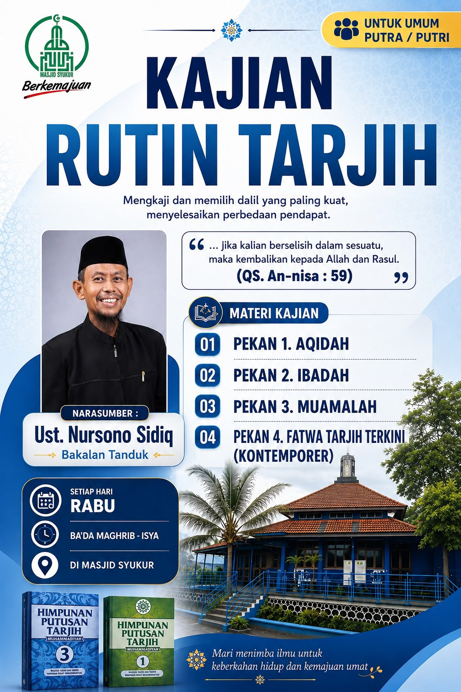
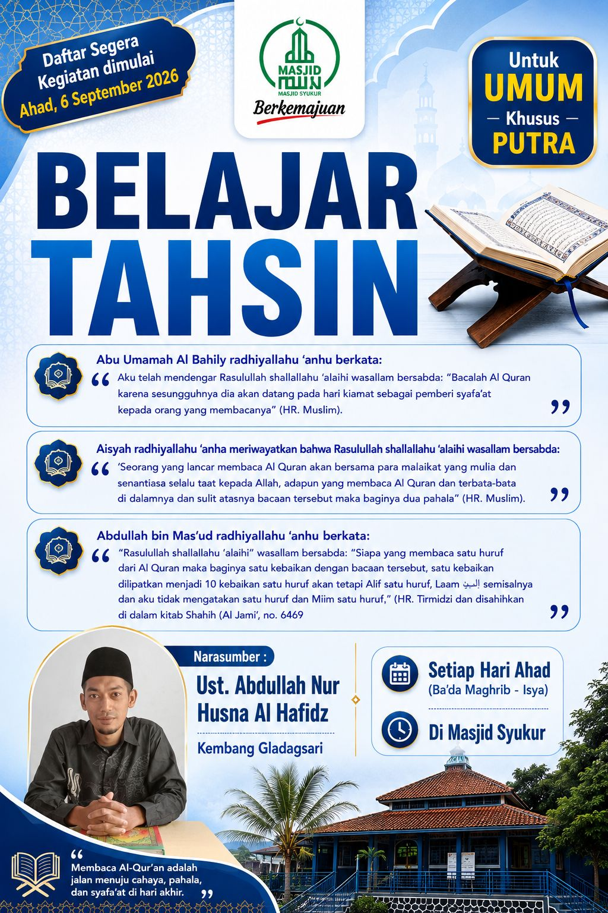
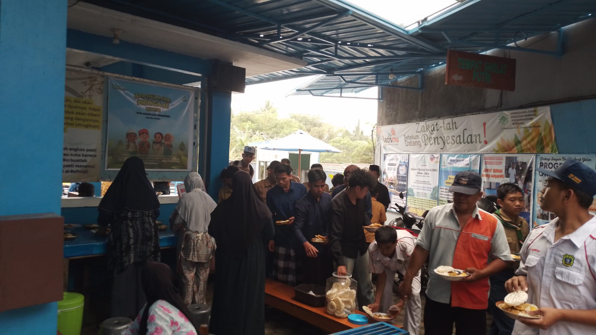
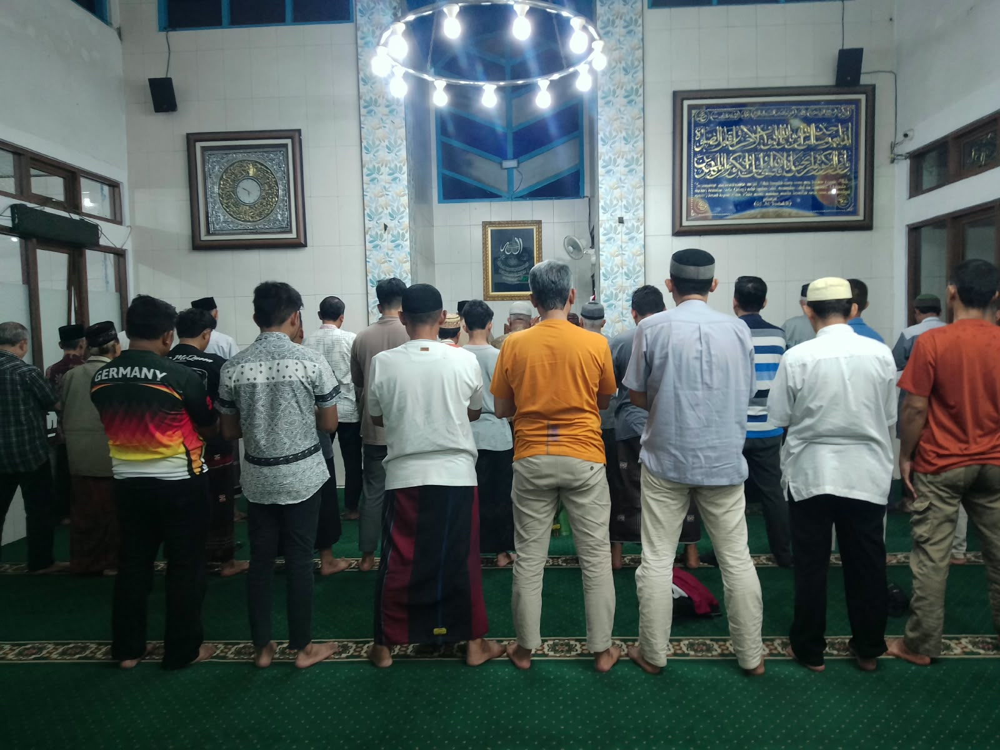
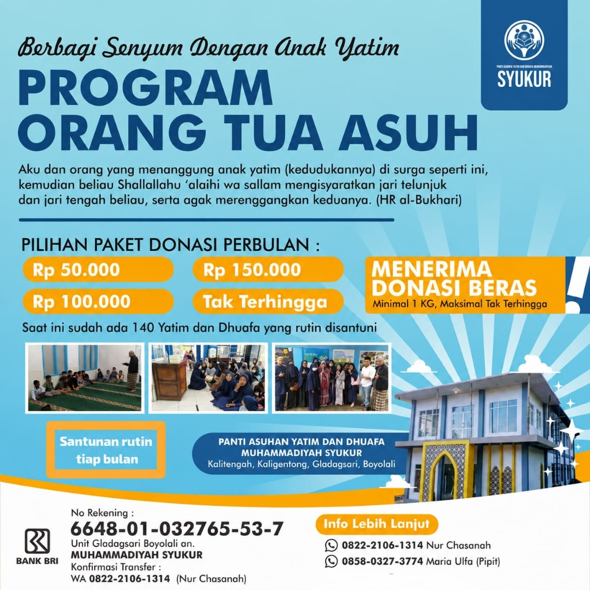

Kajian Rutin
Kajian Rutin Ahad Pagi
Kajian tematik rutin bersama Ust. Teja Nurcahya terbuka untuk umum jamaah putra dan putri, diakhiri dengan sarapan pagi bersama.
Kajian Ahad Pagi, pelayanan musafir 24 jam, I'tikaf Ramadhan berfasilitas, dan program sosial umat.
Kajian tematik rutin bersama Ust. Teja Nurcahya terbuka untuk umum jamaah putra dan putri, diakhiri dengan sarapan pagi bersama.

Mengkaji dalil dan fikih bersama Ust. Nursono Sidiq (Pekan 1: Aqidah, Pekan 2: Ibadah, Pekan 3: Muamalah, Pekan 4: Fatwa Tarjih Terkini).

Bimbingan membaca Al-Qur'an dengan tartil dan tajwid yang benar bersama Ust. Abdullah Nur Husna Al Hafidz.

Disediakan kopi/teh hangat gratis, kasur tidur sejenak, Wi-Fi kencang, dan tempat wudhu bersih higienis bagi pelintas jalur Solo-Semarang.

Pelaksanaan Shalat Jumat berjamaah dilanjutkan santap makan siang prasmanan gratis untuk seluruh jamaah dan musafir.

Shalat fardhu berjamaah dengan imam rawatib, dilengkapi fasilitas jamak-qashar bagi musafir yang menempuh safar.

I'tikaf gratis berfasilitas kasur tidur (kuota terbatas), qiyamul lail berjamaah, serta hidangan buka puasa dan santap sahur cuma-cuma.

Penyaluran santunan rutin bulanan bagi 140 anak yatim dan keluarga dhuafa binaan Panti Asuhan Yatim dan Dhuafa Muhammadiyah (PAYDM) Syukur Gladagsari. Pilihan paket donasi bulanan Rp 50.000, Rp 100.000, Rp 150.000, tak terhingga, dan donasi beras (min. 1 kg). Rekening Bank BRI: 6648-01-032765-53-7 an. MUHAMMADIYAH SYUKUR.
Tidak ada kegiatan pada kategori yang dipilih.